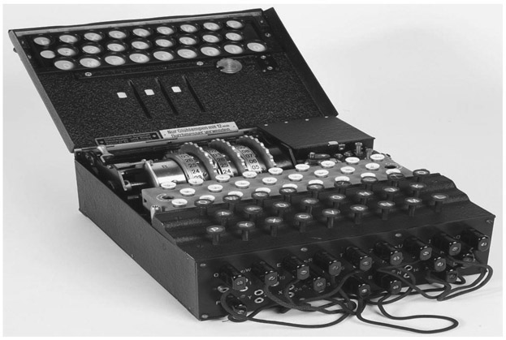
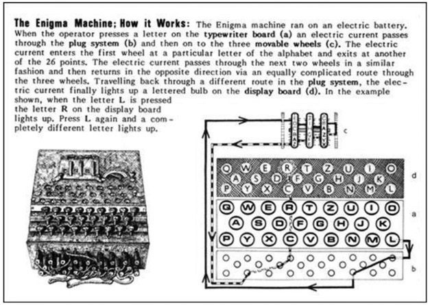
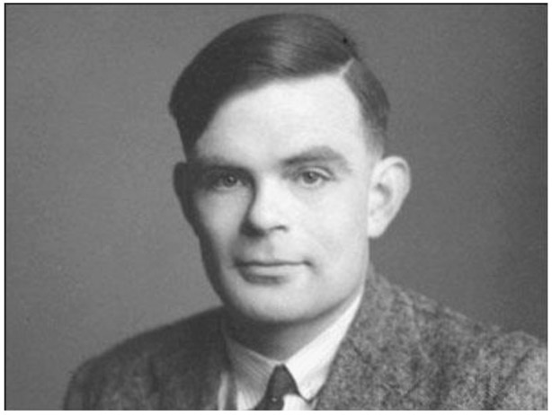
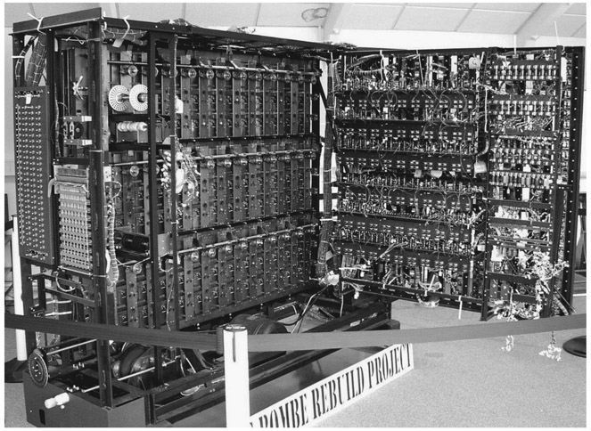
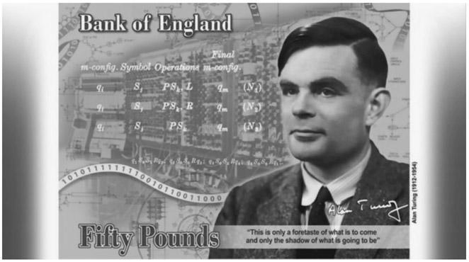

Alan Turing: English (1912–1954)
It was widely believed that the work of a brilliant mathematician shortened World War II by two years and perhaps saved as many as 14 million lives. The immediate question would be how can a mathematician do something that is typically left for soldiers to accomplish? The answer is that through his unique genius, the English mathematician Alan Turing developed a machine that was able to break the Nazi enigma code during World War II, and thereby discover their strategic plans in advance.
In September 1938, Turing began working at the Government Code and Cypher School (GC&CS), which was an organization that specialized in breaking war codes. During World War II the GC&CS was located at Bletchley Park, Milton Keynes, England—which today is a museum largely celebrating Turing’s work. Turing’s main responsibility at the time was cryptanalysis of the Enigma, which was a ciphering system developed by the Western Allies in World War II to decipher Morse-coded radio communications of the Axis powers that had been enciphered through Enigma machines (see fig. 46.1). Essentially, through his innovative work, we say that Alan Turing was the founder of computer science as we know it today.

Figure 46.1. Enigma Machine.
In figure 46.2 we show instructions as to how the machine functioned.

Figure 46.2.
Initially, the Allies used a Polish system to decipher the Axis war codes, but in time it proved to be ineffectual; the Germans were able to supersede its findings. Turing came up with an improvement that made the enigma machine effective. Essentially, he was able to break intercepted codes that enabled the Allies to defeat the Germans in key battles such as the Battle of the Atlantic. His discoveries for deciphering codes were considered an act of sheer brilliance.
Alan Mathison Turing was born in Paddington, London, England, on June 23, 1912, to a well-placed British family. Since his parents were civil servants working in India, Turing spent many of his early years in British foster homes, where there was little encouragement academically. At age 6 he was enrolled in St. Michael’s day school, then at age 10 the Hazel Hurst Preparatory School. His mother was very concerned about his education and wanted him to enter a private school, which he did successfully by entering the prestigious all-boys Sherborne School—which was founded in 1550. There he showed a greater interest in mathematics and science than in the classics, which caused the headmaster there to caution his parents about his potentially failing this primary subject of the school. He managed to grapple with all the subjects, but particularly showed an incredible talent for solving mathematics problems before age 16, and not yet having been exposed to elementary calculus.

Figure 46.3. Alan Mathison Turing.
Turing began his undergraduate studies in 1931 at King’s College of Cambridge University, where for the first time he felt he had a real home. It is also the time where his homosexuality became an integral part of his existence. Rather than spend much of his time in literary circles, he spent a great deal of time in physical activities such as rowing and running. Later as a working mathematician, he would often run to work as many as 10 miles each way and often beating his colleagues who would have taken public transportation at the same time. Further to his running skill it should be noted that in 1948 he ran a marathon in 2 hours 46 minutes 3 seconds, a time that was only 11 minutes slower than the Olympic champion that year!
In 1934, he graduated from King’s College with honors, whereupon he was elected a fellow of King’s College. He began publishing rather impressive mathematical papers, one of which reworked the Austrian mathematician Kurt Gödel’s universal arithmetic-based language with simple hypothetical devices that became known as the Turing machine. This was an abstract machine that manipulated symbols on a strip of tape according to a table of rules. Given any computer algorithm, a Turing machine could be constructed that would be capable of simulating that algorithm’s logic. In his 1948 essay, “Intelligent Machinery,” Turing wrote that his machine consisted of
an unlimited memory capacity obtained in the form of an infinite tape marked out into squares, on each of which a symbol could be printed. At any moment there is one symbol in the machine; it is called the scanned symbol. The machine can alter the scanned symbol, and its behaviour is in part determined by that symbol, but the symbols on the tape elsewhere do not affect the behaviour of the machine. However, the tape can be moved back and forth through the machine, this being one of the elementary operations of the machine. Any symbol on the tape may therefore eventually have an innings (or lifespan).1
As mentioned earlier, this was the beginning of today’s computer. The famous Hungarian-American mathematician John von Neumann (see chap. 44) further supported that idea by saying that the central concept of the modern computer was due to Turing’s work.2
Turing then began his doctoral studies in 1936 at Cambridge University and eventually obtained his PhD degree in 1938 from Princeton University, whereupon John von Neumann encouraged him to stay on as a postdoctoral assistant. However, Turing decided to return to England instead. Upon his return in September 1938, and after attending lectures at Cambridge University, he began working part time at the GC&CS. However, the day after Britain declared war on Germany on September 3, 1949, Turing began to work full time at the GC&CS, where his work eventually brought him lasting fame. There, Turing helped develop an electromechanical machine that could break the enigma code more effectively than the previously used Polish machine, Bomba Kryptologiczna, which in its new form was referred to as Bombe (see fig. 46.4). Yet the most important aspect was Turing’s ingenious mechanization of subtle logical deductions. They were able to routinely read Luftwaffe signals, but not the German naval communications. Once again it was Turing who was eventually able to break these previously unbreakable codes before the end of 1941.

Figure 46.4. A complete and working replica of a Bombe at the National Codes Centre at Bletchley Park.
By 1942, Turing was considered the genius of Bletchley Park, and also had a rather wanting physical appearance, coupled by halting speech and somewhat strange behavior. One of his colleagues was Joan Clarke, who seemed to have caught his eye and to whom he proposed marriage. This was enthusiastically accepted; however, shortly thereafter Turing withdrew his offer and exposed to her his homosexuality. This would not have stopped her from marrying him, but he could no longer go forward in that regard.
In November 1942 he came to the United States to further work on the U-boat Enigma crisis, which had still perplexed the Allies; they couldn’t decipher the signals. By March 1943 the U-boat enigma decryption was effectively resolved and remained so for the rest of the war. Once again, his brilliance became a key factor supporting the Allied troops in the war.
In the later years of the war, Turing had worked with electronic enciphering speech in the telephone system. Although this eventually produced successful results, they were mostly too late to be useful during the war. After the war, Turing lived in London, where he worked on the automatic computing engine, which was a significant forerunner to today’s computers. Secrecy still permeated the field and a lot of his contributions to the development of computers was not publicized until after his death. Beginning in 1948, Turing held the position of reader in the mathematics department at Victoria University in Manchester, England, where he also worked at the computing machine laboratory and helped develop software for the earliest stored-program computer called the Manchester Mark 1. There, he also dabbled with the notion of artificial intelligence, which was one of the earliest attempts to see how a computer could correspond with a human being. In a rather indirect way, these early results by Turing are used today on the internet when we wish to find out if the user is a human or a computer. This test is called CAPTCHA.
In 1948 Turing turned his attention to work with colleagues to develop a program for a computer that would allow it to play chess against a human being. Eventually this became successful, but the moves by the computer took as much as a half-hour; it did in fact beat some competitors, but not all.
By 1951 Turing took up an interest in biology, albeit from a mathematical point of view. He was fascinated by how biological organisms develop their shape. For example, he wanted to understand how phyllotaxis seemed to be dominated by the Fibonacci numbers.3 In more general terms he studied morphogenesis. His work in this field is still relevant today as a defining portion of mathematical biology. Turing’s work in biology has helped understand the growth of organisms that determine placement of feathers and hair follicles, as well as location of various parts of the human body.
In January 1952, Turing developed an intimate relationship with a British man, who was 20 years his junior. Soon thereafter, it was discovered that Turing had a sexual relationship with this man, which at the time in the United Kingdom was a criminal offense. At the trial, Turing’s attorney did not dispute the offense, and entered a guilty plea. To avoid imprisonment, he accepted an alternative, which was to undergo hormonal treatment to reduce his libido. The treatment caused him to be impotent and produced unpleasant bodily changes. His conviction also removed his security clearance for his cryptographic work.
On June 8, 1954, he was found dead in his home, which later was determined to be a result of cyanide poisoning and deemed a suicide. It was 55 years later, in 2009, as a result of extensive petitions, that Britain’s Prime Minister Gordon Brown acknowledged the inappropriateness of condemning Turing’s homosexuality as criminal and offered an apology. This, however, did not satisfy many of those who felt that Turing’s treatment was unjustified and counterproductive to our scientific advancement. As a result of many years of petitions and attempts in Parliament, on December 24, 2013, Queen Elizabeth II signed a pardon for Turing’s conviction for gross indecency, as it was then called.

Figure 46.5.
Today Alan Turing is heralded as the father of computers and the initiator of investigations in a number of areas of science and mathematics. Although he was appointed to the Order of the British Empire in 1946, and then elected as a Fellow of the Royal Society in 1951, his name appears in countless mathematical and scientific concepts and university buildings and halls throughout the world. This is further evidenced by the fact that he was chosen from a list of 227,299 nominees—including Charles Babbage and Ada Lovelace—to be pictured on the highest-denomination banknote in England, the fifty-pound banknote, as shown in figure 46.5. For those interested in this unusually brilliant person, Alan Turing’s life is chronicled in the 2014 movie The Imitation Game.